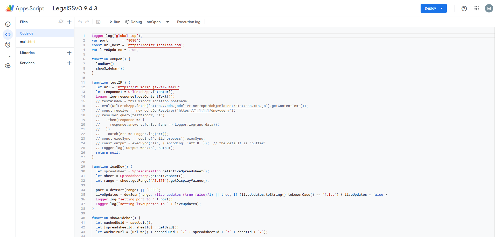
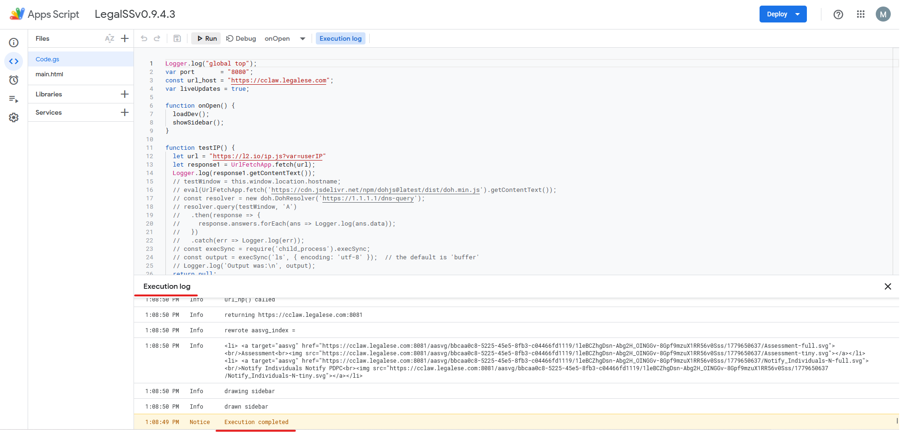

Setting up the LegalSS Google Sheet
Setting up the LegalSS spreadsheet introduces you to the output sidebar and lets you explore Google Sheets as an Interactive Development Environment (IDE).
Clone the spreadsheet so you can try the exercises yourself.
How to clone the spreadsheet
Clone the spreadsheet by clicking on ‘File’ at the toolbar, then choose the 4th option ‘Make A Copy’.

Rename the result: this will be your copy of the spreadsheet tutorial.
Activating the L4 Sheets IDE
A one-time procedure is needed to activate the L4 Sheets IDE.
Click on Extensions/Apps Script.
A new tab will open on your browser and you will be asked to select a project to open. Choose the first project “LegalSS…” with the version number (e.g. “LegalSSv0.9.4.3”). Do not click on “Untitled Project”.

You should be directed to a page similar to the below screenshot.
When the Sheets IDE loads, go back to the LegalSS Google Sheet in your browser and select the tab “Quickstart” if you are not on the page already. Select the “Case Study: PDPA DBNO” sheet at the bottom of this window.

Back in the Sheets IDE, click “Run” to execute the “onOpen” function.
An Execution Log should appear below the Sheets IDE. Wait until you read “Execution Completed”, highlighted in yellow, before you move on to the next step.
Return to the LegalSS Spreadsheet. You should see a sidebar appear on the right side of the page.

If you do not see a sidebar, contact the L4 developers for help.